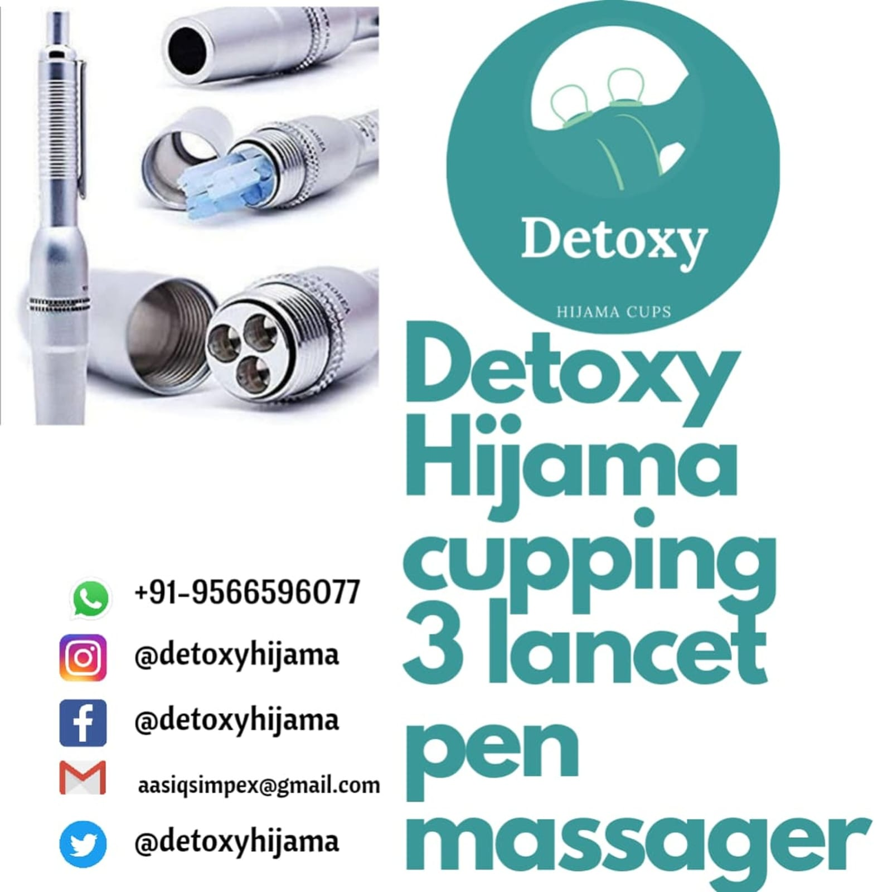

Tools
3-Lancet Pen Massager
₹550
per unit
MRP ₹85035% off
Bulk Price
₹500 per unit
On orders of 5+ units
Triple-lancet pen with adjustable depth and sterile cartridges. Designed specifically for wet cupping (hijama) incision with maximum precision and hygiene.
- ✓3-Lancet Design
- ✓Adjustable Depth
- ✓Sterile Cartridges
- ✓One-Click Action
- ✓Hygienic Single-Use Tips
🚚 Free Shipping above ₹999
🏭 Manufacturer
↩️ 7-Day Returns
| Lancets | 3 per cartridge |
| Depth | Adjustable |
| Sterility | Single-use sterile |
| Origin | Made in India |
| Use | Wet Cupping |
🚚 Delivery: Pan India — typically 3–7 business days via Speed Post / Blue Dart.
🆓 Free Shipping: On all orders above ₹999.
📦 Packaging: Secure bubble-wrap packaging. Products are dispatched same day if ordered before 2 PM.
↩️ Returns: 7-day hassle-free returns for unused items in original packaging. Contact us at detoxyhijama@gmail.com.
💳 Payment: UPI, cards, net banking, COD available at checkout.
You May Also Like

Usage Tips & Best Practices
- ✓Adjustable depth control — set from 0.8mm to 2.4mm based on body region
- ✓Spring-loaded mechanism ensures consistent, controlled incisions
- ✓Use sterile, single-use lancets for every session
- ✓Disinfect between patients as per your clinic protocol
- ✓Handle with care — store cap on when not in use
Ideal For
🎯
Primary Use
Incision in wet hijama therapy
🧪
Material
Medical-grade stainless steel + ABS
👥
Who Uses This
Wet hijama practitioners, professional cupping therapists
🏭
From Our Pollachi Factory
Made in-house. Same-day dispatch. Pan-India delivery.
Frequently Asked Questions
✅
Quality Guaranteed
Medical-grade, BPA-free
🚚
Same Day Dispatch
Orders before 4 PM IST
🔄
7-Day Returns
On unused items
💳
UPI / COD / Card
All payment methods
📞
Support Available
+91 95665 96077
Clinical Guide
Everything You Need to Know About 3-Lancet Pen Massager
Using 3-Lancet Pen Massager in Your Practice
3-Lancet Pen Massager is a professional-grade hijama product trusted by thousands of practitioners across India. Whether you are a solo practitioner, a busy multi-practitioner clinic, or a hijama training institute, understanding the full range of applications and best practices for this product will help you get the best possible therapeutic outcomes for your patients.
Primary applications: The lancet pen is used exclusively in wet hijama to create the precise, shallow skin incisions through which stagnant blood and inflammatory fluid are drawn out during suction. The three-lancet head creates three parallel incisions simultaneously — the standard wet hijama incision pattern — in a single spring-loaded press. Depth is adjustable from 0.5mm to 2mm to accommodate different skin thicknesses and different body regions.
The quality difference between factory-grade and generic hijama products becomes most apparent in consistent daily clinical use. Our manufacturing standards ensure that every unit performs identically to the last — the consistency that professional practice demands. When you know your equipment will perform reliably, you can focus entirely on your technique and your patient, rather than compensating for variable product quality.
Care, Sterilisation and Storage
The lancet pen body is reusable; lancet tip cartridges are single-use and must be disposed of in a sealed sharps container after every patient. Never reuse lancet tips — they dull after a single use and reuse presents a serious cross-contamination risk. Clean the pen body with an isopropyl alcohol wipe after every session and between patients. Inspect the depth-adjustment dial periodically to ensure it is secure and not drifting during sessions.
Proper product care not only protects your patients — it significantly extends the working life of your equipment. Our manufacturing standards are designed for durability in clinical conditions, but longevity requires proper sterilisation protocols, appropriate storage, and regular inspection for wear.
We recommend maintaining a logbook for your reusable equipment, recording sterilisation dates and any observations about product condition. This practice supports infection control accountability and helps you identify when products need replacement before they become a problem in a session.
Clinical Considerations and Best Practice
Set the depth appropriately for the body region and patient: 0.5–1mm for facial and neck regions, sensitive patients and children; 1–1.5mm for standard back, shoulder and arm points on most adult patients; 1.5–2mm for the thick skin of the lower back, thighs and heels in patients with good tolerance. Make a test press on a less sensitive area first when treating a new patient, observe the skin response, and adjust depth before proceeding to primary treatment points.
Every patient is different — their skin sensitivity, underlying conditions, pain tolerance and therapeutic goals all affect how you should use this product. Experienced practitioners develop an intuitive sense for adapting their technique to each patient; new practitioners should start conservatively and increase suction depth, session length or treatment frequency as they observe patient response.
Always conduct a full patient history and assessment before using any hijama product. Document your treatment protocol, the products used, suction levels applied, session duration and patient response for every session. This documentation protects both patient and practitioner and provides the longitudinal data needed to track therapeutic progress over multiple sessions.
B2B Supply
Wholesale 3-Lancet Pen Massager — Factory Pricing for Clinics & Distributors
Bulk Ordering and B2B Pricing
For clinics, hospitals, training institutes and distributors, we offer structured bulk pricing on 3-Lancet Pen Massager that delivers significant savings over retail pricing. Bulk pricing is automatically applied at the minimum quantity thresholds shown on this page — no registration, code or negotiation required.
For very large orders — 10,000+ units of cups, case quantities of consumables, or multi-product institutional supply agreements — contact our B2B team on +91 95665 96077 or email detoxyhijama@gmail.com. We offer custom pricing structures, net-30 payment terms for verified commercial customers, and dedicated account management for our highest-volume supply partners.
We also offer private label packaging — your clinic or brand name printed on cup packaging and product bags. This service is particularly popular with training institutes, clinic chains and distributors who want to supply branded products to their students or retail customers. Minimum quantities apply; contact us for specifications and pricing.
Shipping 3-Lancet Pen Massager Across India
All orders for 3-Lancet Pen Massager are dispatched from our Pollachi, Tamil Nadu factory on the same business day if confirmed before 4 PM IST. We ship to every pin code in India via our logistics partners including DTDC, Delhivery, Blue Dart and India Post.
Our products reach practitioners in Wet hijama practitioners across India — particularly in cities with large hijama clinic communities including Delhi, Mumbai, Chennai, Hyderabad, Bangalore and Lucknow within 1–2 business days, and practitioners in all other parts of India within 2–5 business days depending on location. Remote pin codes in Northeast India, Ladakh, Andaman & Nicobar Islands and other distant locations are served via India Post with typical delivery of 5–7 business days.
Bulk orders of 500+ units are packed in our factory's standard bulk shipping cartons — securely double-boxed with internal padding to prevent damage during transit. We have zero tolerance for delivery damage and will replace any product damaged in transit at no cost to the customer.